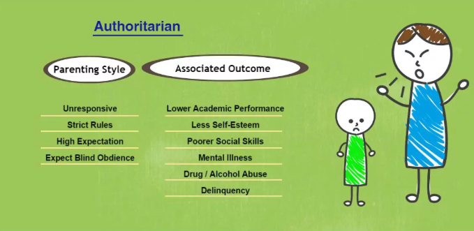
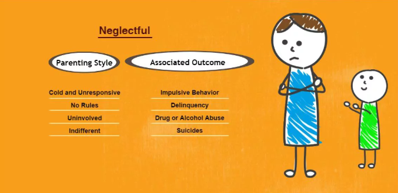

Healthy Parenting Styles
According to Baumrind (1971), Parenting style is conceptualized as a constellation of attitudes or a pattern of parental authority towards the child which are conveyed to the child, creating the emotional context for the expression of parent behavior. Parenting style differs from parenting practice in that it characterizes parent–child interaction across settings and situations, whereas parenting practices are specific to particular situations and domains.
Better Understanding
It’s important to have a better understanding of parenting style because the way you interact with your child and how you discipline her will influence her for the rest of her life. It's important to ensure your parenting style is supporting healthy growth and development.
Types of Parenting Style
In early 1960s Diana Baumrind, a psychologist, conducted a study about parenting style. She identified 3 different types of parenting style but further research by Maccoby and Martin also suggested adding a fourth parenting style to these original three.
Authoritarian Parenting

In this style of parenting, children are expected to follow the strict rules established by the parents. Failure to follow such rules usually results in punishment. Authoritarian parents don't explain the reasoning behind these rules. If asked to explain, the parent might simply reply, "Because I said so." While these parents have high demands, they are not very responsive to their children. They expect their children to behave exceptionally and not make errors, yet they provide very little direction about what their children should do or avoid in the future. Mistakes are punished, often quite harshly, yet their children are often left wondering exactly what they did wrong.

According to Baumrind, these parents "are obedience- and status-oriented, and expect their orders to be obeyed without explanation." Parents who exhibit this style are often described as domineering and dictatorial. Their approach to parenting is one of "spare the rod, spoil the child." Despite having such strict rules and high expectations, they do little to explain the reasoning behind their demands and simply expect children to obey without question.
Authoritative Parenting
Authoritative parents have rules and they use consequences, but they also take their children's opinions into account. They validate their children's feelings, while also making it clear that the adults are ultimately in charge. Authoritative parents invest time and energy into preventing behavior problems before they start. They also use positive discipline strategies to reinforce good behavior, like praise and reward systems.
Children raised with authoritative discipline tend to be happy and successful. They're also more likely to be good at making decisions and evaluating safety risks on their own.
Permissive Parenting
Permissive parents are lenient. They often only step in when there's a serious problem. They're quite forgiving and they adopt an attitude of "kids will be kids." When they do use consequences, they may not make those consequences stick. They might give privileges back if a child begs or they may allow a child to get out of time-out early if he promises to be good. Permissive parents usually take on more of a friend role than a parent role. They often encourage their children to talk with them about their problems, but they usually don't put much effort into discouraging poor choices or bad behavior.
Kids who grow up with permissive parents are more likely to struggle academically. They may exhibit more behavioral problems as they don't appreciate authority and rules. They often have low self-esteem and may report a lot of sadness. They're also at a higher risk for health problems, like obesity, because permissive parents struggle to limit junk food intake. They are even more likely to have dental cavities because permissive parents often don't enforce good habits, like ensuring a child brushes his teeth.
Uninvolved Parenting
Uninvolved parents tend to have little knowledge of what their children are doing. There tend to be few rules. Children may not receive much guidance, nurturing, and parental attention. Uninvolved parents expect children to raise themselves. They don't devote much time or energy into meeting children's basic needs. Uninvolved parents may be neglectful but it's not always intentional. A parent with mental health issues or substance abuse problems, for example, may not be able to care for a child's physical or emotional needs on a consistent basis. At other times, uninvolved parents lack knowledge about child development. And sometimes, they're simply overwhelmed with other problems, like work, paying bills, and managing a household.

Children with uninvolved parents are likely to struggle with self-esteem issues. They tend to perform poorly in school. They also exhibit frequent behavior problems and rank low in happiness.
Outcomes of Parenting Style
- Authoritarian parenting styles generally lead to children who are obedient and proficient, but they rank lower in happiness, social competence, and self-esteem.
- Authoritative parenting styles tend to result in children who are happy, capable, and successful.
- Permissive parenting often results in children who rank low in happiness and self-regulation. These children are more likely to experience problems with authority and tend to perform poorly in school.
- Uninvolved parenting styles rank lowest across all life domains. These children tend to lack self-control, have low self-esteem, and are less competent than their peers.
Authoritative parenting provides such advantages over other styles because authoritative parents are more likely to be viewed as reasonable, fair, and just so their children are more likely to comply with the requests that these parents make. Also, because these parents provide rules as well as explanations for these rules, children are much more likely to internalize these lessons. Rather than simply following the rules because they fear punishment (as they might with authoritarian parents), the children of authoritative parents are able to see why the rules exist, understand that they are fair and acceptable, and strive to follow these rules to meet their own internalized sense of what is right and wrong.
The parenting styles of individual parents also combine to create a unique blend in each family. For example, the mother may display an authoritative style while the father favors a more permissive approach. This can sometimes lead to mixed signals or even situations where a child seeks approval from the more permissive parent to get what they want. In order to create a cohesive approach to parenting, it is essential that parents learn to cooperate as they combine various elements of their unique parenting styles.
Click to see sources